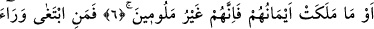

FİRDEVS’E
VÂRİS OLACAK
MÜ’MİNLER
Rahman ve Rahim (olan) Allah’ın adıyla
1. Gerçekten mü’minler kurtuluşa ermiştir;
2. Onlar ki, namazlarında huşû içindedirler;
3. Onlar ki, boş ve yararsız şeylerden yüz çevirirler;
4. Onlar ki, zekâtı verirler;
5. Ve onlar ki, iffetlerini korurlar;
6. Ancak eşleri ve ellerinin sahip olduğu (câriyeleri) hariç. (Bunlarla ilişkilerden
dolayı) kınanmış değillerdir.
7. Şu halde, kim bunun ötesine gitmek isterse, işte bunlar, haddi aşan kimselerdir.
8. Yine onlar (o müminler) ki, emanetlerine ve ahidlerine riayet ederler;
9. Ve onlar ki, namazlarına devam ederler.
10. İşte, asıl bunlar vâris olacaklardır;
11. (Evet) Firdevs’e vâris olan bu kimseler, orada ebedî kalıcıdırlar.
“Gerçekten mü’minler kurtuluşa ermiştir.” Tasdik edenler hoşbaht/mutlu oldular ve
cennette ebedî kalmaya nâil oldular. Nitekim şu husus buna delâlet etmektedir: Allah
Adn cennetini yaratınca ona: “Konuş.” buyurdu. O da: “Gerçekten mü’minler kurtuluşa
ermiştir.” dedi. Bunun üzerine Allah Teâlâ ona: “Ey meliklerin yurdu ne mutlu sana!”
buyurdu. Buradaki meliklerden maksad, cennet melikleridir ki onlar sabreden